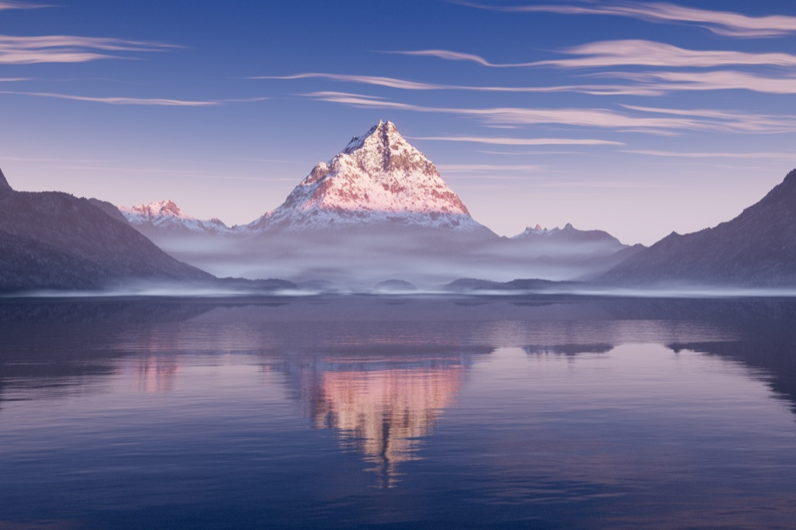
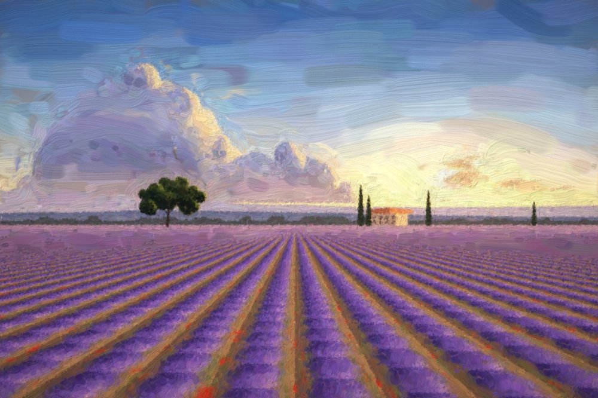
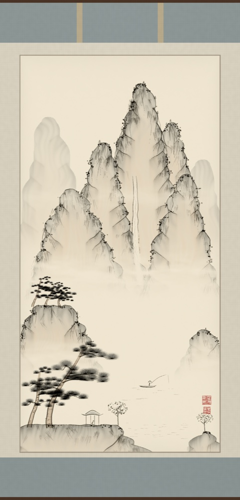
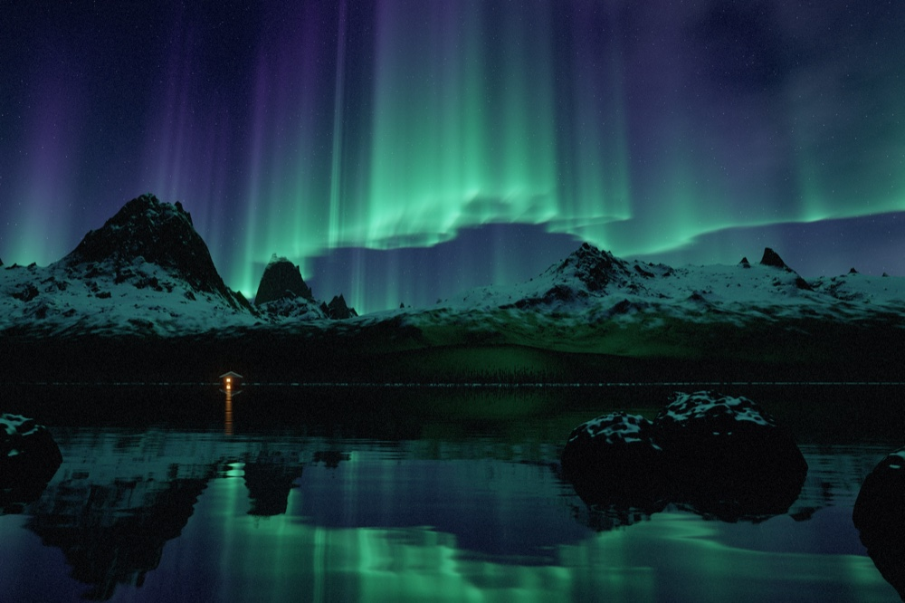
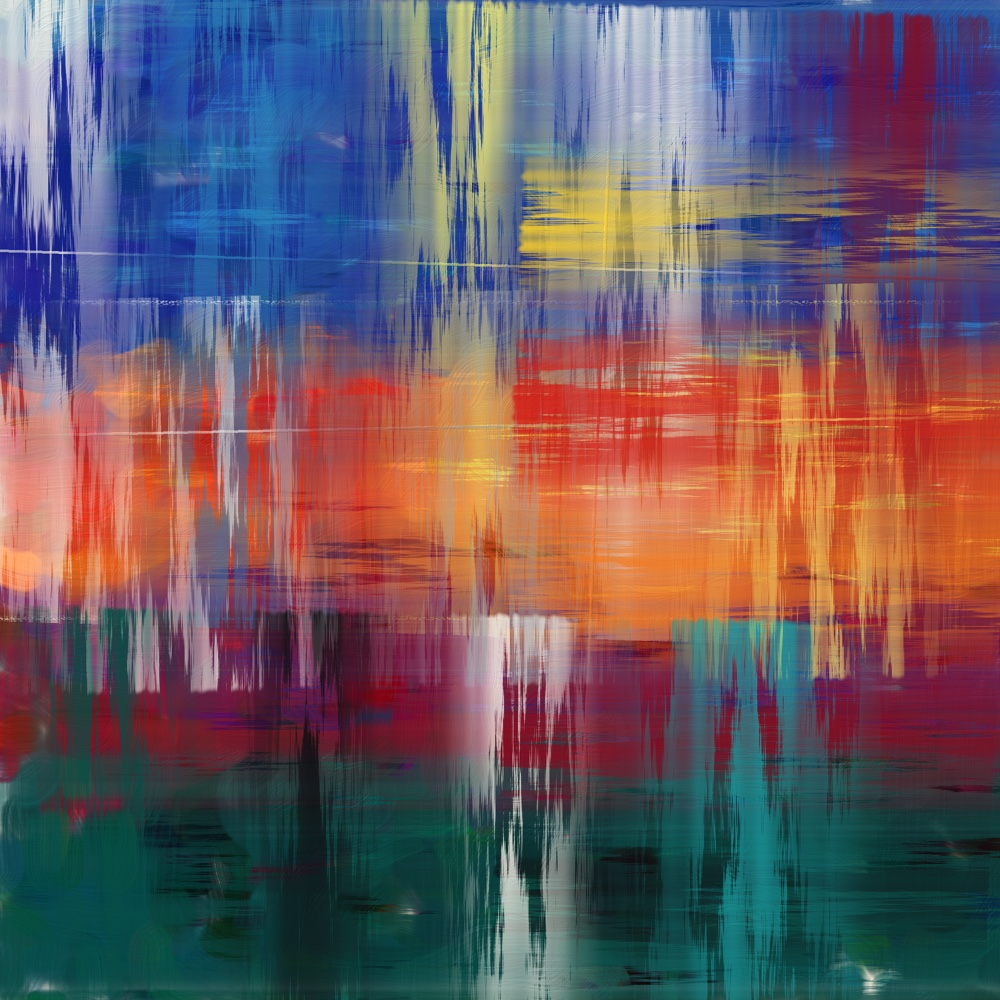
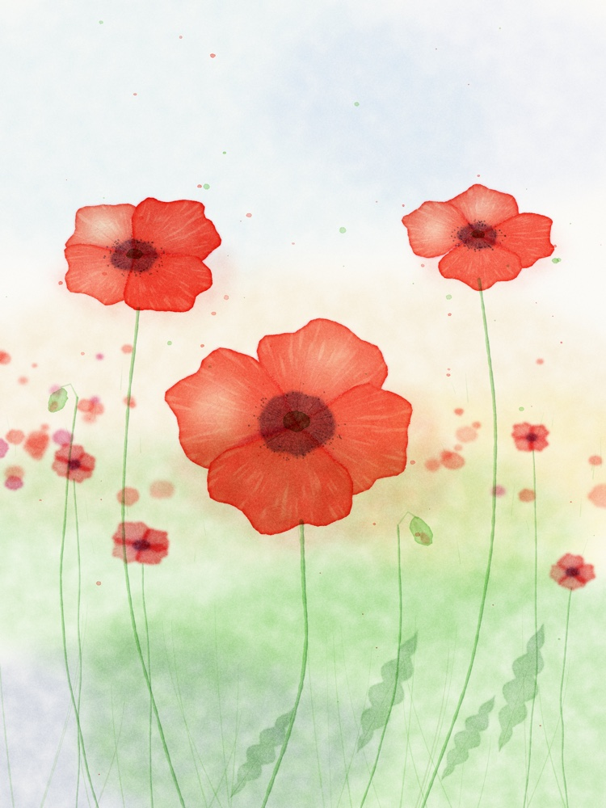

Alpenglow
Raymarched light on an imagined range
First light reaches only the summit; the valley still lies in the earth's blue shadow. Eroded terrain, soft sun shadows, fog banks and a glassy lake.

Lavender, Late Light
Oil on canvas, alla prima, impasto
Painted coarse to fine with bristle brushes that run dry, carry wet paint and leave ridges, then lit like a canvas on a wall.

Ten Thousand Valleys, Pines and Mist
Ink and light colour on xuan paper, hanging scroll
Boulder-stacked peaks in hemp-fibre strokes and moss dots, a waterfall in a cleft, a scholar watching it, and a boat in the mist.

The Sky Over Ravnvatn
Aurora, starlight and one lit window
Curtains marched through altitude so they fold in perspective, from green at the foot to violet at the crown, and repeated in the lake.

Strata
Oil on canvas, dragged with a squeegee
A loaded blade pulled through wet paint: it deposits, skips in torn streaks, smears, scrapes back to older layers, and ridges where it stops.

Poppies, After Rain
Watercolour and graphite on cold-pressed paper
Transparent glazes that pool at their drying edges and settle into the paper's grain, over a ground painted wet-in-wet.